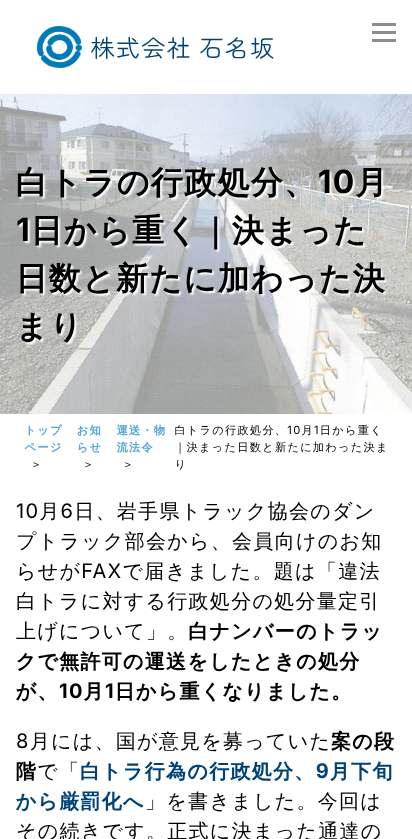
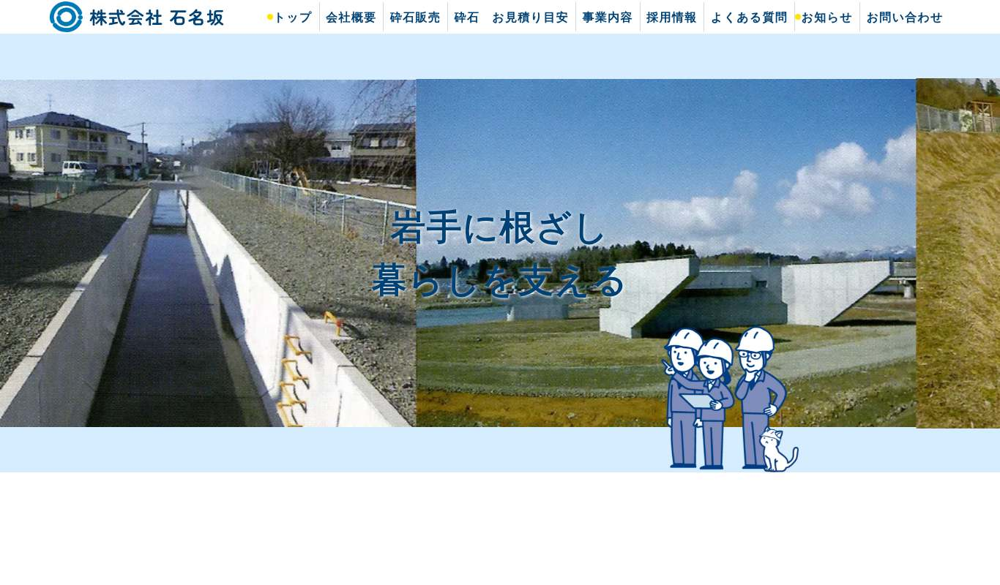

<title>石名坂サイト 3回目の点検</title>
<link rel="preconnect" href="https://fonts.googleapis.com">
<link rel="preconnect" href="https://fonts.gstatic.com" crossorigin>
<link rel="stylesheet" href="https://fonts.googleapis.com/css2?family=Shippori+Mincho:wght@600&family=Zen+Kaku+Gothic+New:wght@400;500;700&display=swap">
<style>
  /* 配置：1列の読み物。表は横にはみ出さず、枠の中で横スクロール */
  :root{
    --paper:#F2F3F1; --surface:#FFFFFF; --sunk:#E9EBE7;
    --ink:#23262A; --muted:#656B6F; --line:#D4D8D3;
    --accent:#1F5E8A; --accent-ink:#164567; --accent-wash:#E2ECF4;
    --bad:#9A2E24; --bad-wash:#F8E6E3; --mid:#8A5A12; --mid-wash:#F7EBD6; --good:#2B6B3F; --good-wash:#E1F0E5;
    --step:clamp(15px,1.4vw,16px);
  }
  @media (prefers-color-scheme: dark){
    :root:not([data-theme="light"]){
      --paper:#15171A; --surface:#1F2226; --sunk:#191B1E; --ink:#ECEDEA; --muted:#A4A9AD; --line:#353A40;
      --accent:#6FAEDC; --accent-ink:#A9D0EC; --accent-wash:#1C2A36;
      --bad:#E39A90; --bad-wash:#2F1F1C; --mid:#E0B36A; --mid-wash:#2E2619; --good:#8CCB9E; --good-wash:#1B2B20; color-scheme:dark;
    }
  }
  :root[data-theme="dark"]{
    --paper:#15171A; --surface:#1F2226; --sunk:#191B1E; --ink:#ECEDEA; --muted:#A4A9AD; --line:#353A40;
    --accent:#6FAEDC; --accent-ink:#A9D0EC; --accent-wash:#1C2A36;
    --bad:#E39A90; --bad-wash:#2F1F1C; --mid:#E0B36A; --mid-wash:#2E2619; --good:#8CCB9E; --good-wash:#1B2B20; color-scheme:dark;
  }
  *{box-sizing:border-box}
  body{margin:0;background:var(--paper);color:var(--ink);font-family:"Zen Kaku Gothic New","Hiragino Kaku Gothic ProN","Yu Gothic",system-ui,sans-serif;font-size:var(--step);line-height:1.8;-webkit-text-size-adjust:100%}
  .wrap{max-width:760px;margin:0 auto;padding-inline:16px;padding-block:36px 72px;display:flex;flex-direction:column;gap:30px}
  h1{font-family:"Shippori Mincho","Yu Mincho",serif;font-weight:600;font-size:clamp(24px,5.4vw,33px);line-height:1.45;margin:0;text-wrap:balance}
  h2{font-size:calc(var(--step) + 4px);margin:0;font-weight:700;text-wrap:balance;padding-left:12px;border-left:4px solid var(--accent)}
  h3{font-size:calc(var(--step) + 1px);margin:0;font-weight:700}
  p{margin:0}
  .lede{color:var(--muted)}
  .rule{height:3px;width:52px;background:var(--accent);border-radius:2px}
  section{display:flex;flex-direction:column;gap:14px}
  .card{background:var(--surface);border:1px solid var(--line);border-radius:10px;padding:18px 16px;display:flex;flex-direction:column;gap:10px}
  .top3{display:grid;gap:12px}
  .top3 .card{border-top:4px solid var(--bad)}
  .top3 .card:nth-child(3){border-top-color:var(--mid)}
  .num{font-family:ui-monospace,Menlo,monospace;color:var(--accent-ink);font-size:.8em;letter-spacing:.06em}
  .tbl{overflow-x:auto;border:1px solid var(--line);border-radius:8px;background:var(--surface)}
  table{border-collapse:collapse;width:100%;min-width:560px;font-size:calc(var(--step) - 1px)}
  th,td{padding:9px 10px;border-bottom:1px solid var(--line);vertical-align:top;text-align:left;line-height:1.6}
  th{background:var(--sunk);font-weight:700;white-space:nowrap}
  tr:last-child td{border-bottom:none}
  td.n{font-variant-numeric:tabular-nums;white-space:nowrap}
  .tag{display:inline-block;font-size:12px;font-weight:700;letter-spacing:.06em;border-radius:999px;padding:1px 10px;line-height:1.7;white-space:nowrap}
  .bad{background:var(--bad-wash);color:var(--bad)} .mid{background:var(--mid-wash);color:var(--mid)} .good{background:var(--good-wash);color:var(--good)} .info{background:var(--accent-wash);color:var(--accent-ink)}
  ul,ol{margin:0;padding-left:1.4em;display:flex;flex-direction:column;gap:5px}
  .note{border-left:3px solid var(--accent);background:var(--accent-wash);padding:12px 14px;border-radius:0 8px 8px 0;display:flex;flex-direction:column;gap:6px}
  .mail{background:var(--sunk);border:1px solid var(--line);border-radius:8px;padding:14px;white-space:pre-wrap;font-size:calc(var(--step) - 1px);line-height:1.8}
  code{font-family:ui-monospace,Menlo,monospace;font-size:.9em;background:var(--sunk);padding:1px 5px;border-radius:4px;word-break:break-all}
  .shot{display:grid;grid-template-columns:repeat(auto-fit,minmax(140px,1fr));gap:10px}
  .shot figure{margin:0;display:flex;flex-direction:column;gap:6px;font-size:13px;color:var(--muted)}
  .kpi{display:grid;grid-template-columns:repeat(auto-fit,minmax(130px,1fr));gap:10px}
  .kpi div{background:var(--surface);border:1px solid var(--line);border-radius:8px;padding:10px 12px}
  .kpi b{display:block;font-size:1.45em;line-height:1.3;font-variant-numeric:tabular-nums}
  .kpi span{color:var(--muted);font-size:13px}
  small{color:var(--muted)}
</style>
<main class="wrap">
  <header style="display:flex;flex-direction:column;gap:12px">
    <div class="rule"></div>
    <h1>石名坂のホームページ<br>3回目の点検（2026年10月18日）</h1>
    <p class="lede">公開中の171ページに今月の記事1本を加えた172ページを全部取り直し、外から見える範囲でセキュリティも調べました。読むだけの調べ方で、ログインの試行や書き込みはしていません。</p>
  </header>


  <section>
    <h2>先に、言葉の説明</h2>
    <div class="tbl"><table>
      <thead><tr><th>この報告書の言葉</th><th>意味</th></tr></thead>
      <tbody>
        <tr><td>PHP／致命的エラー</td><td>ホームページを動かしているプログラムの言語と、その途中で止まってしまう誤りのこと</td></tr>
        <tr><td>HTTPヘッダ（守りの見出し）</td><td>ページを送るときに一緒に付ける「取扱いの注意書き」。ブラウザはこれを見て、偽ページへの重ね表示などを防ぐ</td></tr>
        <tr><td>HSTS</td><td>注意書きの1つ。「このサイトは必ず暗号化（https）で開くこと」という指示</td></tr>
        <tr><td>XML-RPC</td><td>外のプログラムからWordPressを遠隔操作するための古い入口。今は使わないのが普通</td></tr>
        <tr><td>REST API</td><td>外のプログラムからWordPressを読み書きするための新しい入口。私が記事を直すときに使っているのもこれ</td></tr>
        <tr><td>SPF／DMARC／DKIM</td><td>会社のメールアドレスをかたった迷惑メールを、受け取る側が見分けるための仕組み。DNS（住所録）に書く</td></tr>
        <tr><td>DNS</td><td>インターネットの住所録。「ishinazaka.co.jp はどのサーバーか」などを書いてある場所。お名前.com で管理</td></tr>
        <tr><td>TLS／証明書</td><td>通信の暗号化と、その「本物の証明書」のこと。鍵マークの元</td></tr>
        <tr><td>SiteGuard</td><td>入っている守り用のプラグイン（部品）。ログインの画像認証などを担当</td></tr>
        <tr><td>Lighthouse</td><td>Googleが配っている、ページの速さや見やすさを採点する道具。100点満点</td></tr>
        <tr><td>キャッシュ</td><td>一度読んだものを手元に取っておく仕組み。あると2回目以降が速い</td></tr>
        <tr><td>AdSense</td><td>Googleの広告。ページに広告枠を出し、クリックで収入になる仕組み</td></tr>
        <tr><td>og:image／Xのカード</td><td>LINEやX（旧Twitter）でリンクを貼ったときに出る、見出し画像の設定</td></tr>
        <tr><td>CF7（Contact Form 7）</td><td>お問い合わせフォームのプラグイン</td></tr>
      </tbody>
    </table></div>
  </section>

  <section>
    <h2>まず、この3つ</h2>
    <div class="top3">
      <div class="card">
        <span class="num">01</span>
        <h3>プログラムの誤りが、そのまま外に表示されています</h3>
        <p>お問い合わせフォームの裏側の入口（<code>/wp-json/contact-form-7/v1/contact-forms</code>）を開くと、PHPの致命的エラーの全文が出ます。その中に、サーバーの中の置き場所 <code>/home/ecn06602a/public_html/site1/</code> が書かれています。攻撃する側に「どこに何があるか」を教えてしまう状態です。フォームの送信そのものは別の入口なので、いまのところ動いています。</p>
        <p><strong>直し方：</strong>サーバーの設定でエラーの画面表示を止める（<code>display_errors</code> をオフ、WordPress では <code>WP_DEBUG_DISPLAY</code> を false）。あわせて、Contact Form 7（6.2.2）の <code>includes/rest-api.php</code> 33行目で止まっている原因（PHPの版との相性の可能性）を制作会社に見てもらう。</p>
      </div>
      <div class="card">
        <span class="num">02</span>
        <h3>ページに付ける「取扱いの注意書き」（守りの見出し）が1つもありません</h3>
        <p>「必ず暗号化で開く」「他のサイトの中に重ねて表示させない」「ファイルの種類を勝手に判断させない」など5種類の注意書きが、172ページすべてで付いていませんでした。これらは1行ずつの設定で、見た目は変わりません。無いと、偽のページに重ねて表示される、httpで開かれる、といった手口を防げません。</p>
        <p><strong>直し方：</strong>サーバー（カゴヤ・ジャパン）の設定か、SiteGuard以外のセキュリティ系プラグインで5本を足す。具体的な値は下の表に書きました。</p>
      </div>
      <div class="card">
        <span class="num">03</span>
        <h3>ページが重く、遅い回線では表示に10秒かかります</h3>
        <p>スマホで開くと1ページ約3MB・75回の読み込みです。Googleの物差し（Lighthouse、遅い回線を想定）でトップページは<strong>性能 58点</strong>、いちばん大きな絵が出るまで <strong>10.1秒</strong>。サーバーの応答も毎回 0.8〜1.1秒かかっています。見やすさ・ルール遵守・検索向けの3つは <strong>100点</strong>でした。</p>
        <p><strong>直し方：</strong>順番は下の「速さ」の節に。費用をかけずにできるものから並べています。</p>
      </div>
    </div>
  </section>

  <section>
    <h2>セキュリティの点検</h2>
    <p>結論から言うと、<strong>基本の守りはできています。</strong>WordPress本体は最新（7.1.3、10月6日のセキュリティ更新に追従済み）、SiteGuardが入っていて、よくある抜け道（著者名の列挙、未ログインでのAPI、置き忘れファイル）は塞がっています。直すのは、上の2つと下の「中」の4つです。</p>
    <div class="tbl"><table>
      <thead><tr><th>項目</th><th>結果</th><th>判定</th><th>やること</th></tr></thead>
      <tbody>
        <tr><td>エラーの画面表示</td><td>致命的エラーの全文とサーバー内の場所が外から見える</td><td><span class="tag bad">高</span></td><td>display_errors をオフ。CF7の原因調査（制作会社）</td></tr>
        <tr><td>守りの見出し（HTTPヘッダ）</td><td>HSTS / X-Content-Type-Options / X-Frame-Options / Referrer-Policy / Permissions-Policy がすべて無い</td><td><span class="tag mid">中</span></td><td>下の設定値を追加（制作会社）</td></tr>
        <tr><td>遠隔操作の古い入口（XML-RPC）</td><td>10月18日 20時12分、SiteGuard で「XML-RPC 無効化」に変更。外から開くと 403（立入禁止）になり、命令の一覧も返らないことを確認</td><td><span class="tag good">済</span></td><td>—</td></tr>
        <tr><td>メールのなりすまし対策</td><td>「このサーバーから送ったものが本物」という宣言（SPF）はある。<strong>「偽物が来たらこう扱って」という指示（DMARC）が無い</strong></td><td><span class="tag mid">中</span></td><td>DNS に <code>_dmarc</code> を追加（下に例）。DKIM はカゴヤの設定を確認</td></tr>
        <tr><td>ログイン画面</td><td>既定の場所 <code>/common/sys/wp-login.php</code> で誰でも開ける。画像認証はある。管理画面は未ログインだと404 ✓</td><td><span class="tag mid">中</span></td><td>SiteGuard の「ログインページ変更」と「ログインロック」をオン。2段階認証は画面からは断定できず、設定を確認</td></tr>
        <tr><td>WordPress 本体</td><td>7.1.3（最新。9月22日と10月6日のセキュリティ更新に追従）</td><td><span class="tag good">良</span></td><td>—</td></tr>
        <tr><td>プラグイン</td><td>10月18日に2本を更新し、8本すべて最新（Easy Accordion 3.1.11、Post Views Counter 1.8.0）を外から確認</td><td><span class="tag good">済</span></td><td>—</td></tr>
        <tr><td>REST API（外部からの読み書きの口）</td><td>未ログインでは遮断（SiteGuard）。ただし文言に「TEST12345」というテスト文字列が残っている</td><td><span class="tag info">低</span></td><td>文言だけ直す（制作会社）</td></tr>
        <tr><td>利用者名の漏れ</td><td><code>?author=1〜5</code> はトップへ転送、フィードは停止、oEmbed も遮断。表示名（管理用石名坂）は記事の構造化データに出るが、ログイン名ではない</td><td><span class="tag good">良</span></td><td>—</td></tr>
        <tr><td>置き忘れファイル</td><td>wp-config の控え、.env、.git、debug.log、バックアップ、phpinfo など18通りを確認。すべて 404/403</td><td><span class="tag good">良</span></td><td>—</td></tr>
        <tr><td>フォルダの一覧表示</td><td>uploads / wp-includes は 403。func / themes は空の応答。一覧は出ない</td><td><span class="tag good">良</span></td><td>—</td></tr>
        <tr><td>http → https</td><td>301 で転送。www なしも www ありへ転送</td><td><span class="tag good">良</span></td><td>HSTS を付ければ完成</td></tr>
        <tr><td>Cookie</td><td>ログインの Cookie は Secure・HttpOnly。閲覧数の Cookie は Secure・SameSite</td><td><span class="tag good">良</span></td><td>—</td></tr>
        <tr><td>検索窓</td><td>入力した文字はエスケープされて表示（そのまま実行されない）</td><td><span class="tag good">良</span></td><td>—</td></tr>
        <tr><td>お問い合わせフォーム</td><td>Cloudflare Turnstile（人間かどうかの確認）あり。コメント欄は全ページ無し</td><td><span class="tag good">良</span></td><td>—</td></tr>
        <tr><td>install.php / upgrade.php / readme.html</td><td>開ける（通常の WordPress と同じ。中身に版や秘密は無い）</td><td><span class="tag info">低</span></td><td>気になれば遮断</td></tr>
        <tr><td>チャットボット（AI Engine）</td><td>未ログインでも使える。画像・ファイルの添付はオフ。ログイン時だけ本人の情報を画面に埋め込む（本人にしか見えない）</td><td><span class="tag info">情報</span></td><td>1日の利用上限が設定されているか確認（費用の守り）</td></tr>
        <tr><td>作業用アカウント ai-agent</td><td>アプリケーションパスワードが有効のまま</td><td><span class="tag info">低</span></td><td>作業が終わったら取り消す</td></tr>
        <tr><td>暗号化の証明書</td><td>私の作業環境は通信を中継しているため、<strong>ここからは確かめられません</strong></td><td><span class="tag info">要確認</span></td><td><a href="https://www.ssllabs.com/ssltest/analyze.html?d=www.ishinazaka.co.jp" target="_blank" rel="noopener">SSL Labs</a> で一度確認（A 以上なら十分）</td></tr>
      </tbody>
    </table></div>

    <div class="card">
      <h3>守りの見出し：足す値（そのまま渡せます）</h3>
      <div class="mail">Strict-Transport-Security: max-age=31536000; includeSubDomains
X-Content-Type-Options: nosniff
X-Frame-Options: SAMEORIGIN
Referrer-Policy: strict-origin-when-cross-origin
Permissions-Policy: camera=(), microphone=(), geolocation=()</div>
      <p><small>Content-Security-Policy は、YouTube の埋め込み・Google フォント・広告・チャットがあるため設計が要ります。上の5本を先に。</small></p>
    </div>
    <div class="card">
      <h3>DMARC：DNS に足す1行（はじめは「監視だけ」）</h3>
      <div class="mail">名前: _dmarc.ishinazaka.co.jp
種類: TXT
値: v=DMARC1; p=none; rua=mailto:office@ishinazaka.co.jp</div>
      <p><small>DNS はお名前.com系（dnsv.jp）で管理されています。数週間、届く報告を見てから <code>p=quarantine</code> に上げます。</small></p>
    </div>
  </section>

  <section>
    <h2>速さ</h2>
    <div class="kpi">
      <div><b>58</b><span>性能（Lighthouse・スマホ）</span></div>
      <div><b>100 / 100 / 100</b><span>見やすさ・ルール・検索向け</span></div>
      <div><b>10.1秒</b><span>最大の絵が出るまで（遅い回線の想定）</span></div>
      <div><b>0.8〜1.1秒</b><span>サーバーの最初の応答（毎回）</span></div>
      <div><b>約3MB・75回</b><span>スマホで1ページに読み込む量</span></div>
      <div><b>0.002</b><span>表示のずれ（CLS）。良い</span></div>
    </div>
    <div class="tbl"><table>
      <thead><tr><th>ページ</th><th>応答</th><th>最大の絵</th><th>読み込み完了</th><th>量</th><th>回数</th></tr></thead>
      <tbody>
        <tr><td>トップ</td><td class="n">1.0秒</td><td class="n">3.1秒</td><td class="n">3.0秒</td><td class="n">2,952KB</td><td class="n">75</td></tr>
        <tr><td>白トラの記事</td><td class="n">1.1秒</td><td class="n">2.1秒</td><td class="n">3.3秒</td><td class="n">2,937KB</td><td class="n">75</td></tr>
        <tr><td>砕石販売</td><td class="n">1.1秒</td><td class="n">1.9秒</td><td class="n">2.7秒</td><td class="n">2,871KB</td><td class="n">67</td></tr>
      </tbody>
    </table></div>
    <p><small>上の表は速い回線で実測した値、「10.1秒」は Lighthouse が遅い携帯回線を模擬した値です。実際の利用者の統計（CrUX）はまだ集まっていません。</small></p>
    <h3>重さの内訳（どのページもほぼ同じ）</h3>
    <ul>
      <li><strong>Google フォント：28ファイル・約340KB。</strong>Noto Sans JP（100〜900の全ウェイト）、Zen Kaku Gothic Antique（5ウェイト）、Zen Maru Gothic（3ウェイト）を全部読み込んでいます。見出しで使うのは Zen Maru Gothic だけに見えます。</li>
      <li><strong>Google タグ（gtag.js）：577KB。</strong>アクセス解析用。読み込みを後回しにできます。</li>
      <li><strong>広告スクリプト（AdSense）：約500KB＋外部への接続14回。</strong>172ページ中163ページで読み込まれています。トップにも入っています。</li>
      <li><strong>描画を止める CSS と JS：3本で約1.5秒分。</strong>jquery-migrate と、Autoptimize がまとめた CSS 2本。</li>
      <li><strong>ブラウザに「取っておいてよい期間」を伝えていない：30件。</strong>画像・CSS・JS に Cache-Control も Expires も無く、2回目以降の表示も毎回取り直しになります。</li>
      <li><strong>サーバーの応答 0.8〜1.1秒。</strong>ページのキャッシュが無く、毎回 WordPress が組み立てています。</li>
    </ul>
    <h3>直す順番（おすすめ）</h3>
    <ol>
      <li><strong>ブラウザのキャッシュ期間を付ける</strong>（画像・CSS・JS に1か月〜1年）。見た目は変わらず、2回目以降が一気に軽くなる。制作会社のサーバー設定で。</li>
      <li><strong>Google フォントを絞る。</strong>本文は端末の書体、見出しだけ Zen Maru Gothic の 400/700 にすれば、28ファイルが4〜6ファイルになる。テーマの <code>&lt;link&gt;</code> 1行の変更。</li>
      <li><strong>描画を止めるものを後ろへ。</strong>Autoptimize の「CSS をインライン＆遅延」と、jquery-migrate の読み込み停止。</li>
      <li><strong>広告を続けるか決める。</strong>会社のサイトとしては「広告が出ている」こと自体が印象に関わります。続けるなら、トップと会社概要・事業内容・お問い合わせの4ページだけでも外す。</li>
      <li><strong>ページキャッシュを入れる。</strong>応答が 1秒 → 0.2秒程度になる見込み。カゴヤのサーバー側の機能か、キャッシュのプラグイン（ログイン中は除外する設定が要ります）。</li>
      <li><strong>トップのメイン写真。</strong>パソコンで見ると粗く見えます（スキャンした写真）。横1600px以上の写真に差し替えると印象が変わります。</li>
    </ol>
  </section>

  <section>
    <h2>見え方・検索向け（172ページ）</h2>
    <div class="tbl"><table>
      <thead><tr><th>項目</th><th>結果</th><th>判定</th></tr></thead>
      <tbody>
        <tr><td>ページの状態</td><td>172ページすべて 200。サイト内のリンク切れ 0（サイトマップ外の6件はページ送りで、すべて正常）</td><td><span class="tag good">良</span></td></tr>
        <tr><td>題名・説明文の重複</td><td>どちらも 0。canonical も全ページ自分を指す。h1 は全ページ1つ</td><td><span class="tag good">良</span></td></tr>
        <tr><td>題名の長さ</td><td>35字を超えるものが 33本（最長39字）。検索結果では後ろが「…」で切れる</td><td><span class="tag info">低</span></td></tr>
        <tr><td>説明文の長さ</td><td>60字未満 5本、120字超 1本（物流大綱の記事、127字）</td><td><span class="tag info">低</span></td></tr>
        <tr><td>SNS 用の画像（og:image）</td><td>無いページ 14（農業エネルギー連載5本＋カテゴリー9）。前回から変わらず</td><td><span class="tag mid">中</span></td></tr>
        <tr><td>X（旧Twitter）のカード</td><td>全ページ無し。前回から変わらず</td><td><span class="tag info">低</span></td></tr>
        <tr><td>画像の代替テキスト</td><td>無い画像 48枚（18ページ、2026年春までの古い記事）</td><td><span class="tag info">低</span></td></tr>
        <tr><td>短い記事</td><td>本文500字未満 4本（post-170, 1432, 1853, 1943）。ゲームのページなどで、意図的なら問題なし</td><td><span class="tag info">情報</span></td></tr>
        <tr><td>記事どうしのつながり</td><td>1記事あたりの内部リンク 中央値15本。3本未満は 0</td><td><span class="tag good">良</span></td></tr>
        <tr><td>404ページ</td><td>題名が「 » ページが見つかりませんでした」でサイト名が空。見出しが無く、トップと同じ部品を全部読み込んで 61KB</td><td><span class="tag info">低</span></td></tr>
        <tr><td>スマホのパンくず</td><td>「トップ ページ ＞」のように縦に折れて読みにくい（下の画面）。題名が長い記事ほど目立つ</td><td><span class="tag info">低</span></td></tr>
        <tr><td>タップしにくい小さなリンク</td><td>1ページに 13〜19個（横幅か高さが24px未満）。主にパンくずと末尾の案内</td><td><span class="tag info">低</span></td></tr>
      </tbody>
    </table></div>
    <div class="shot">
      <figure><figcaption>記事（スマホ）。パンくずが縦に折れています</figcaption></figure>
      <figure><figcaption>トップ（パソコン）。メイン写真が粗く見えます</figcaption></figure>
    </div>
  </section>

  <section>
    <h2>前回（9月）からの変化</h2>
    <div class="tbl"><table>
      <thead><tr><th>前回の積み残し</th><th>いま</th></tr></thead>
      <tbody>
        <tr><td>WordPress 本体の更新</td><td><span class="tag good">済</span> 7.1.3</td></tr>
        <tr><td>社名を「株式会社 石名坂」にそろえる（記事側）</td><td><span class="tag good">済</span> 本文・題名・説明文・カテゴリー</td></tr>
        <tr><td>Broken Link Checker の有料プラン</td><td><span class="tag good">済</span> 解約（9月30日で終了）</td></tr>
        <tr><td><code>xmlns="https://www.w3.org/1999/xhtml"</code>（http が正しい）</td><td><span class="tag mid">未</span> 172ページ</td></tr>
        <tr><td>フッターのロゴ画像の代替テキスト「株式会社石名坂」</td><td><span class="tag mid">未</span> 172ページ</td></tr>
        <tr><td>検索エンジン向けの事業者情報（GeneralContractor）の社名</td><td><span class="tag mid">未</span> トップ</td></tr>
        <tr><td>プライバシーポリシーの社名（空白なし3か所・全角3か所）</td><td><span class="tag mid">未</span> 管理者のみ編集可</td></tr>
        <tr><td>記事の著者の表示名（管理用石名坂 145本、echnaadmin 1本）</td><td><span class="tag mid">未</span></td></tr>
        <tr><td>農業エネルギー連載5本のアイキャッチ／カテゴリーの SNS 用画像／X のカード</td><td><span class="tag mid">未</span></td></tr>
      </tbody>
    </table></div>
  </section>

  <section>
    <h2>やることの振り分け</h2>
    <div class="card">
      <h3>A. 制作会社に頼むもの（1通にまとめた文面）</h3>
      <div class="mail">ホームページの点検で、次の点が見つかりました。対応をお願いします。

1. PHP のエラーが画面に表示されています（最優先）
   https://www.ishinazaka.co.jp/wp-json/contact-form-7/v1/contact-forms を開くと
   Fatal error の全文とサーバー内のパスが表示されます。
   display_errors（WP_DEBUG_DISPLAY）をオフにしてください。
   あわせて Contact Form 7 の includes/rest-api.php 33行目で
   止まる原因（PHP の版との相性？）の確認をお願いします。

2. セキュリティ用の HTTP ヘッダを追加してください（5本）
   Strict-Transport-Security: max-age=31536000; includeSubDomains
   X-Content-Type-Options: nosniff
   X-Frame-Options: SAMEORIGIN
   Referrer-Policy: strict-origin-when-cross-origin
   Permissions-Policy: camera=(), microphone=(), geolocation=()

3. 画像・CSS・JS にブラウザキャッシュの期間（Cache-Control / Expires）を
   付けてください。いまは 0 件です。

4. テーマの修正
   ・&lt;html xmlns="https://www.w3.org/1999/xhtml"&gt; → http://
   ・フッターのロゴ alt="株式会社石名坂" → "株式会社 石名坂"
   ・GeneralContractor の JSON-LD の name → "株式会社 石名坂"
   ・404 ページの &lt;title&gt; にサイト名が入っていません
   ・Google フォントの読み込みを、使っている書体とウェイトだけに
     （いまは3書体・28ファイル）

5. REST API を止めたときのメッセージに「TEST12345」という
   テスト文字列が残っています。</div>
    </div>
    <div class="card">
      <h3>B. 管理画面で自分でできるもの</h3>
      <ul>
        <li>SiteGuard：<s>「XMLRPC防御」</s>（10月18日に済）。「ログインページ変更」「ログインロック」をオン。2段階認証の有無を確認</li>
        <li><s>プラグイン2本を更新（Easy Accordion、Post Views Counter）</s>（10月18日に済）</li>
        <li>ユーザー「管理用石名坂」「echnaadmin」の表示名を「株式会社 石名坂」に</li>
        <li>農業エネルギー連載5本にアイキャッチを設定。AIOSEO で X のカードをオン、カテゴリーの既定画像を設定</li>
        <li>プライバシーポリシーの社名を直す</li>
        <li>AI Engine（チャット）の1日の利用上限を確認</li>
        <li>作業が終わったら、ai-agent のアプリケーションパスワードを取り消す</li>
      </ul>
    </div>
    <div class="card">
      <h3>C. DNS（お名前.com）</h3>
      <ul><li>上の DMARC の TXT レコードを1行追加</li></ul>
    </div>
    <div class="card">
      <h3>D. 藤原さんの判断が要るもの</h3>
      <ul>
        <li>広告（AdSense）を続けるか。少なくともトップ・会社概要・事業内容・お問い合わせから外すか</li>
        <li>ページキャッシュの導入（制作会社と相談）</li>
        <li>トップのメイン写真の差し替え</li>
      </ul>
    </div>
  </section>

  <section>
    <h2>調べ方と限界</h2>
    <div class="note">
      <p>・サイトマップの172ページをすべて取得（応答ヘッダも保存）。書き込み・ログイン試行・総当たりは一切していません。</p>
      <p>・置き忘れファイルの確認は、よくある18通りの場所を1回ずつ開いただけです。</p>
      <p>・TLS 証明書は、私の作業環境が通信を中継するため確かめられません。SSL Labs でご確認ください。</p>
      <p>・速さの採点は Lighthouse 12.8（スマホ・遅い回線の模擬）。Google の PageSpeed の公開枠は上限に達していたため、手元のブラウザで計測しました。</p>
      <p>・外部サイトへの出典リンクは、前回（0本切れ）から変えていないため今回は省き、Broken Link Checker の監視（449本、切れ判定7本はすべて機械拒否の403）に任せています。</p>
      <p>・使った道具と結果の控え：<code>wordpress/docs/tenken3/</code></p>
    </div>
  </section>
</main>
